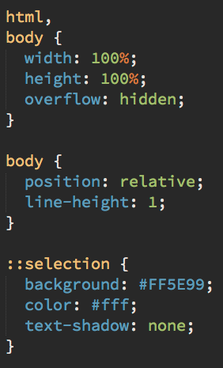

台中前端社群
霧煞煞的CSS選擇器
Taichung Frontend Group
場地WIFI: aaaaaa / bbbbbb
簡報連結: http://frontend.inow.tw/events/1016/
今日流程
- 來賓自我介紹
- 什麼是CSS選擇器
- 各種選擇器介紹
- 中場休息
- 挑戰CSS Diner
- 選擇器的效能問題
- QnA
- 交流時間
自我介紹時間
- 我的名字是
- 任職的公司與職務
- 關於CSS選擇器，我的了解是...
- Or 關於CSS，我想學的是
什麼是CSS選擇器?
透過一套有順序與規則的方式找到符合條件的HTML元件
我是選擇器 { 我是屬性:我是設定值 }
CSS選擇器的運用範圍與必要性
- CSS樣式的作用範圍
- jQuery的DOM選擇器
- 幫助了解HTML結構的層次與順序
- 加入偽元素的運用
各種選擇器介紹1
- 標籤選擇器: 如body, div, table, h1...
- 萬用選擇器: *
- 群組選擇器, 使用逗點分開, 例如: h1, h2, h3
- ID選擇器: #, 套用於id="foo"
- Class選擇器: ., 套用於class="bar
- 後代選擇器, 例如:body table
各種選擇器介紹2
- 子選擇器, 使用大於符號, 例如: a > img
- 相鄰選擇器, 使用加號 例如: li + li
- 屬性選擇器: input[type=text], 符合條件的屬性
- 偽元素選擇器, 例如: hover, first-child
- 同輩選擇器, 使用~, 例如: .brother ~ .sisters
更多選擇器介紹
http://www.w3schools.com/cssref/css_selectors.asp
中場休息 15mins
挑戰CSS Diner (20mins)
http://flukeout.github.io/
右手邊有提示，還是卡關的請舉手
- 五分鐘內破關: 您已是選擇器大師
- 八分鐘內破關: 高手高手高高手
- 十二分鐘內破關: 您有潛力成為高手
- 十五分鐘內破關: 前方的路還很遙遠。加油！
選擇器的效能問題
- DOM是從上而下開始解析
- 你的選擇器是從右邊往左寫，瀏覽器是從左往右看
- 濫用巢狀選擇器的問題
- 避免使用萬用選擇器
- jQuery的效能比較: http://jsperf.com/jquery-performance-bn/3
偽元素應用範例: +
首頁 > 母類別 > 子類別 > 產品
Q & A
關於CSS選擇器，我還想了解的是...
參考文件
- http://stackoverflow.com/questions/5797014/why-do-browsers-match-css-selectors-from-right-to-left
- http://www.w3schools.com/cssref/css_selectors.asp
- http://csswizardry.com/2011/09/writing-efficient-css-selectors
- http://blog.fishsaut.com/2010/03/css-selector.html
- http://jsperf.com/jquery-performance-bn/3
交流時間

Thank You